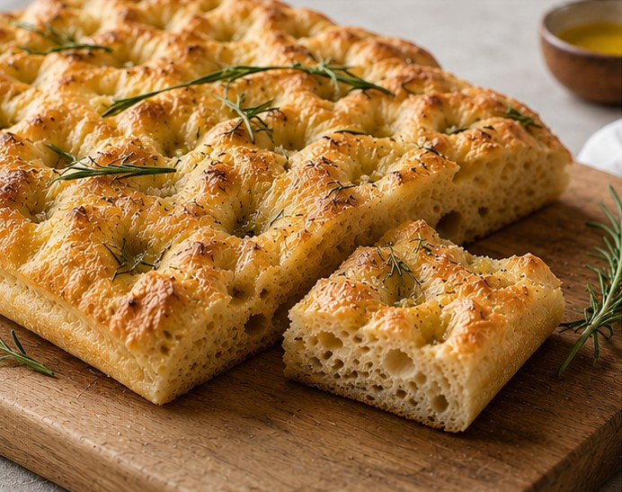

Focaccia
Enkel och luftig Focaccia - tar lite tid att göra, men är värt besväret.

Ingridienser:
- Jäst 25 g
- Ljummet vatten 5 dl
- Olivolja 2 msk
- Salt 1 tsk
- Vetemjöl 11-12 dl
Topping:
- • Olivolja
- • Flingsalt
- • Rosmarin
Gör så här:
- 1. Lös upp jästen i vattnet.
- 2. Tillsätt olja, salt och mjöl.
- 3. Jäs 45 minuter.
- 4. Tryck ut degen i form och låt jäsa 20 minuter till.
- 5. Ringla över olja och topping.
- 6. Grädda i 225 grader i ca 20 minuter.